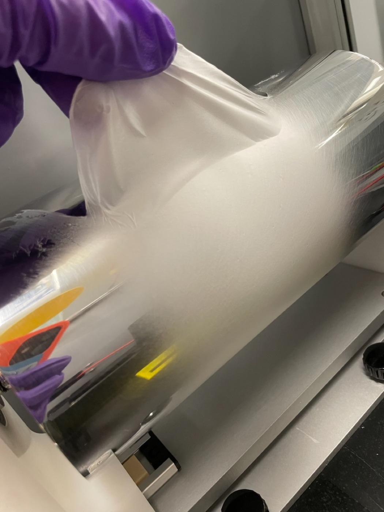
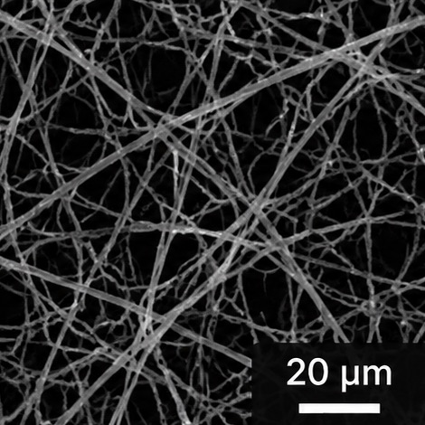
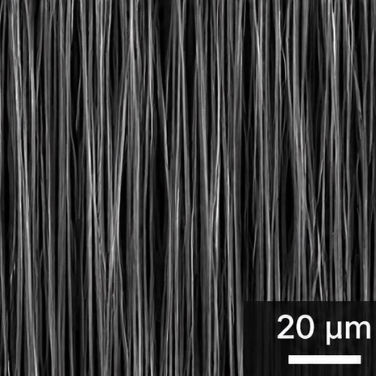
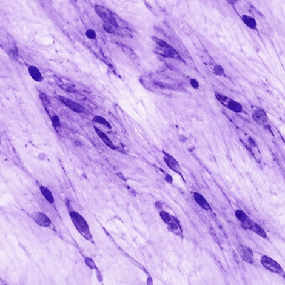

Permanent polypropylene mesh
- Permanent foreign material
- Associated with chronic inflammation and erosion
- Forms scar tissue rather than regenerating tissue
- Under increased regulatory scrutiny
Women's health · Soft tissue repair
Tensara is developing a resorbable nanofiber scaffold that guides the body to rebuild its own organized tissue, then dissolves, leaving no permanent mesh behind.

The problem
Surgeons repairing soft tissue today choose between permanent plastic, current resorbables that don't guide healing, or a second surgery to harvest the patient's own tissue.
Sources: [add citations].
Our technology
Tensara's engineered nanofibers are designed to direct and organize tissue regeneration so the repaired tissue resembles the pre-trauma tissue: restoring native tissue, not replacing it.

1Coaxial nanofibers, around 500 nm across, mimic the body's natural extracellular matrix.

2An elongated, aligned fiber structure guides cells to organize the way native tissue does.

3The scaffold guides tissue ingrowth, then resorbs, leaving no permanent foreign body behind.
| Design goal | Tensara | Permanent synthetic mesh | Autologous fascia |
|---|---|---|---|
| Fully resorbable | Yes | No | n/a (own tissue) |
| Guides tissue regeneration | Designed to | No (scar tissue) | n/a |
| No second surgical site | Yes | Yes | No |
| No permanent foreign body | Yes | No | Yes |
Head-to-head preclinical comparisons are planned. Tensara characteristics reflect design intent.
One platform, many tissues
Tensara combines bioabsorbable materials with tunable fiber architecture, so the same platform can be tailored to tissue injuries that current mesh underserves.
Lead program
We are starting where the regulatory path is clearest and the clinical need is greatest, including stress urinary incontinence (SUI), where the current standard of care is often considered a last resort.
Next indications
For surgeons
We are working with urogynecologists and reconstructive surgeons to design our studies. If you treat patients these devices are failing, we'd value your perspective.
Talk to our team →For investors
Patent-pending nanofiber technology developed at Dartmouth, a defined path to a first 510(k), and a platform built for follow-on indications.
Request our deck →Team
Co-Founder & CEO
PhD in Biomedical Engineering and Surgical Innovation Program Fellow. Principal Investigator on Tensara's STTR Phase I award.
Co-Founder & Board Director
Venture Partner at Borealis Ventures. Previously co-founder and CEO of Avitide (acquired by Repligen), Head of Manufacturing at Adimab, and Senior Engineer at Merck Research Labs.